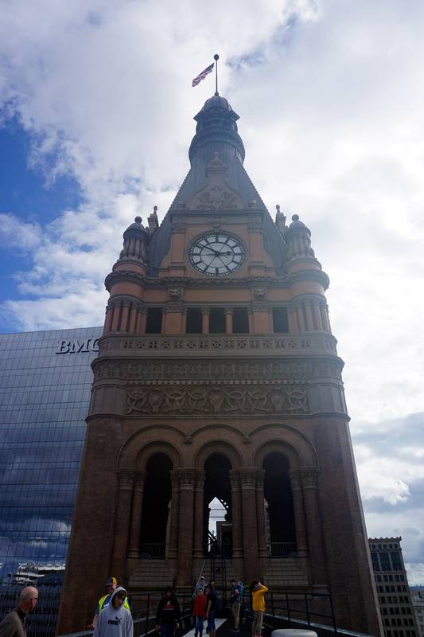

밀워키 시의회, 전력회사 인수 타당성 조사에 135만 달러 승인

시영 전력 전환 가능성 검토 단계…설비 매입·수용 권한은 아직 없어
미국 위스콘신주 밀워키 시의회가 6일 2027년 시 예산을 논의하던 중, 민간 전력회사 위 에너지스(We Energies)를 시영 전력으로 바꾸는 방안의 타당성 조사에 최대 135만 달러를 빌리는 안을 15 대 0으로 승인했다. 차입금은 5~6년에 걸쳐 갚는다. 이번 승인은 설비 매입이나 수용 권한을 주는 것이 아니라 재정·운영상 가능한지를 따져 보는 단계다. 시는 2027년 2월 1일까지 외부 컨설턴트 모집에 나서야 하고, 응답을 받기 전에는 집행이 제한된다. 시의원·시민단체·노조가 참여하는 태스크포스 구성도 제안됐다. 앞선 안은 재정·인사위원회에서 2 대 2로 부결됐다가 수정안이 통과했고, 시장은 거부권을 쓸 수 있으며 인수에 앞서 주민투표가 필요하다. 알렉스 브라워 시의원은 "우리 전력망을 소유하고 위 에너지스를 대체하는 첫걸음"이라고 했고, 위 에너지스는 이 조사를 "잘못된 길"이라며 다른 도시의 비용 추산과 앤아버 조사를 근거로 들었다.
시민에너지 관점
15 대 0 표결과 135만 달러라는 숫자는 공영화 논의가 인수 선언이 아니라 계산에서 시작한다는 점을 보여 준다. 비용 추산이 엇갈린다는 우려는 외부 컨설턴트 조사와 인수 전 주민투표라는 절차로 답할 수 있다. 전력망을 지역이 소유할 수 있는지는 지역이 직접 숫자를 뽑아 본 뒤에야 판단할 수 있고, 시의원뿐 아니라 시민단체와 노조까지 태스크포스에 참여시키는 구상은 그 판단을 시민 몫으로 두려는 시도다. 국내 지자체도 에너지 공급 구조를 지역이 검토할 수 있도록 조사 예산과 시민 참여 장치를 먼저 마련해야 한다.
출처: Urban Milwaukee 2026-11-06 Jeramey Jannene 원문 보기
창간 전 시험 발행 기사입니다.
ミルウォーキー市議会、電力会社買収の実現可能性調査に135万ドルを承認
市営電力への転換可能性を検討する段階…設備の買い取りや収用の権限はまだない
米国ウィスコンシン州ミルウォーキー市議会は6日、2027年の市予算を議論する中で、民間電力会社We Energies（ウィスコンシン・エナジー）を市営電力に切り替える案の実現可能性調査のため、最大135万ドルを借り入れる案を15対0で承認した。借入金は5～6年かけて返済する。今回の承認は設備の買い取りや収用の権限を与えるものではなく、財政・運営面で可能かどうかを検討する段階だ。市は2027年2月1日までに外部コンサルタントの募集に着手しなければならず、応募を受ける前は執行が制限される。市議会議員・市民団体・労働組合が参加するタスクフォースの設置も提案された。先の案は財政・人事委員会で2対2で否決された後、修正案が可決された。市長は拒否権を行使でき、買収に先立って住民投票が必要だ。アレックス・ブラワー市議は「私たちの電力網を所有し、ウィスコンシン・エナジーに代わる第一歩」と述べ、ウィスコンシン・エナジーはこの調査を「誤った道」とし、他都市の費用推計とアナーバーの調査を根拠に挙げた。
市民エネルギーの視点
15対0の採決と135万ドルという数字は、公営化の議論が買収宣言ではなく計算から始まることを示している。費用推計が食い違うという懸念には、外部コンサルタントによる調査と買収前の住民投票という手続きで答えることができる。電力網を地域が所有できるかどうかは、地域が自ら数字を出してみて初めて判断でき、市議だけでなく市民団体や労働組合までタスクフォースに参加させる構想は、その判断を市民の手に残そうとする試みだ。国内の自治体も、エネルギー供給構造を地域が検討できるよう、調査予算と市民参加の仕組みを先に整える必要がある。
出典: Urban Milwaukee 2026-11-06 Jeramey Jannene 原文を読む
創刊前の試験発行記事です。
密尔沃基市议会批准135万美元，用于电力公司收购可行性研究
处于研究转为市营电力可能性的阶段…尚无购买设施或征收的权限
美国威斯康星州密尔沃基市议会6日在讨论2027年市预算时，以15比0批准了一项议案：为研究将民营电力公司We Energies（威斯康星能源公司）改为市营电力的可行性，最多借款135万美元。借款将在5至6年内偿还。此次批准并不赋予购买设施或征收的权力，只是审视财政和运营上是否可行的阶段。市政府须在2027年2月1日前着手招募外部顾问，在收到应答之前，执行受到限制。还有人提议组建由市议员、公民团体和工会参加的工作组。此前的议案在财政与人事委员会以2比2被否决，随后修正案获得通过。市长可行使否决权，收购之前还须进行居民投票。市议员亚历克斯·布劳尔表示，这是"拥有我们的电网、取代威斯康星能源公司的第一步"；威斯康星能源公司则称这项研究是"错误的道路"，并以其他城市的成本估算和安娜堡的研究为依据。
市民能源视角
15比0的表决结果和135万美元这一数字表明，公有化讨论不是从宣布收购开始，而是从计算开始。对于成本估算存在分歧的担忧，可以用外部顾问研究和收购前居民投票这些程序来回应。电网能否由地方所有，只有在地方亲自算出数字之后才能判断，不仅让市议员，还让公民团体和工会参加工作组的设想，是试图把这一判断留给市民。国内的地方政府也应先建立调查预算和市民参与机制，使地方能够审视能源供应结构。
来源: Urban Milwaukee 2026-11-06 Jeramey Jannene 查看原文
本文为创刊前试发行文章。
Milwaukee Council Approves $1.35 Million for Utility Takeover Feasibility Study
Stage is examining whether a switch to municipal power is possible... no authority yet to buy assets or use eminent domain
During debate on the 2027 city budget on the 6th, the Milwaukee Common Council in Wisconsin, USA, approved by a vote of 15 to 0 a measure to borrow up to $1.35 million to study the feasibility of replacing the private utility We Energies with a city-run power system. The borrowed funds will be repaid over five to six years. The approval does not grant authority to buy assets or use eminent domain; it is a stage for weighing whether the idea is financially and operationally possible. The city must begin recruiting an outside consultant by February 1, 2027, and spending is restricted until responses are received. A task force that includes council members, citizen groups and labor unions was also proposed. An earlier version failed 2 to 2 in the Finance and Personnel Committee before an amended version passed; the mayor can use a veto, and a referendum is required before any takeover. Alderman Alex Brower called it "It's the first step in owning our grid and replacing We Energies," while We Energies called the study "the wrong path," citing cost estimates from other cities and the Ann Arbor study.
Citizen Energy View
The 15-to-0 vote and the figure of $1.35 million show that the debate over public ownership begins with calculation, not with a declaration of takeover. Concern that cost estimates diverge can be answered with the procedures of an outside consultant's study and a referendum before any takeover. Whether a community can own its grid can only be judged after the community has run the numbers itself, and the idea of including not only council members but also citizen groups and labor unions in the task force is an attempt to leave that judgment with citizens. Local governments in Korea, too, should first set up study budgets and citizen participation mechanisms so that communities can examine their energy supply structure.
Source: Urban Milwaukee 2026-11-06 Jeramey Jannene Read the original
This article was published during the trial period before launch.